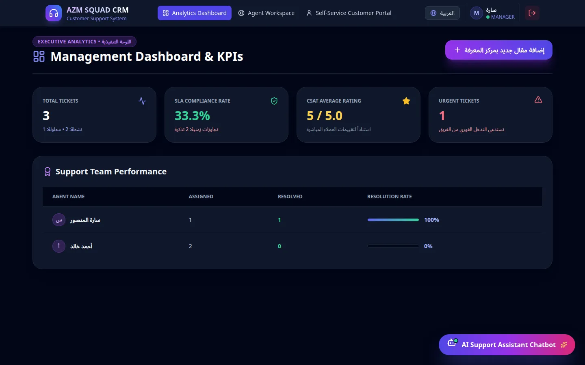

WebويبSoftware services · KSAخدمات برمجية · السعودية2026
Customer support CRM with an AI co-pilotنظام دعم فني وخدمة عملاء بمساعد ذكي
A complete bilingual help desk covering a 12-part requirements brief.منصّة دعم فني ثنائية اللغة تغطي متطلبات من ١٢ قسمًا بالكامل.

Contextالسياق
A Saudi software consultancy needed one place for customer tickets across email, WhatsApp, live chat, SMS and web forms — with SLA tracking, a knowledge base and a self-service portal, in Arabic and English.احتاجت شركة استشارات برمجية سعودية مكانًا واحدًا لتذاكر العملاء من البريد وواتساب والمحادثة المباشرة والرسائل والنماذج — مع تتبّع SLA وقاعدة معرفة وبوابة خدمة ذاتية، بالعربية والإنجليزية.
What I builtما الذي بنيته
- 01
Agent workspaceمساحة عمل الموظف
Ticket queue, customer 360° profile, internal notes and escalation.قائمة التذاكر، ملف العميل الشامل ٣٦٠°، الملاحظات الداخلية والتصعيد.
- 02
AI co-pilotالمساعد الذكي
One-click ticket summaries, suggested replies, auto-classification and a support chatbot.تلخيص التذاكر بضغطة، اقتراح الردود، التصنيف التلقائي، وبوت دعم تفاعلي.
- 03
SLA & automationSLA والأتمتة
Response and resolution timers with breach alerts and escalation rules.مؤقتات للرد والحل مع تنبيهات التجاوز وقواعد التصعيد.
- 04
Customer portalبوابة العميل
Submit and follow tickets, search the knowledge base, rate support (CSAT).إنشاء التذاكر ومتابعتها، البحث في قاعدة المعرفة، وتقييم الخدمة (CSAT).
- 05
Manager dashboardلوحة المدير
KPIs, SLA compliance and team performance, with role-based access for admin, manager, agent and customer.مؤشرات الأداء والتزام SLA وأداء الفريق، مع صلاحيات للأدمن والمدير والموظف والعميل.
Key decisionsقرارات أساسية
- A documented REST API (OpenAPI) first, so WhatsApp, email and future channels plug into the same ticket model.بناء REST API موثّق (OpenAPI) أولًا، لتتصل قنوات واتساب والبريد وأي قناة مستقبلية بنفس نموذج التذاكر.
- Full RTL/LTR switching at runtime with i18next instead of two separate front-ends.تبديل كامل بين RTL وLTR أثناء التشغيل عبر i18next بدل واجهتين منفصلتين.
Resultsالنتائج
- 12/12
- brief sections deliveredقسمًا من المتطلبات منفّذة
- 4
- roles with their own viewsأدوار بواجهات مخصّصة
- AR/EN
- full RTL & LTRدعم كامل RTL وLTR